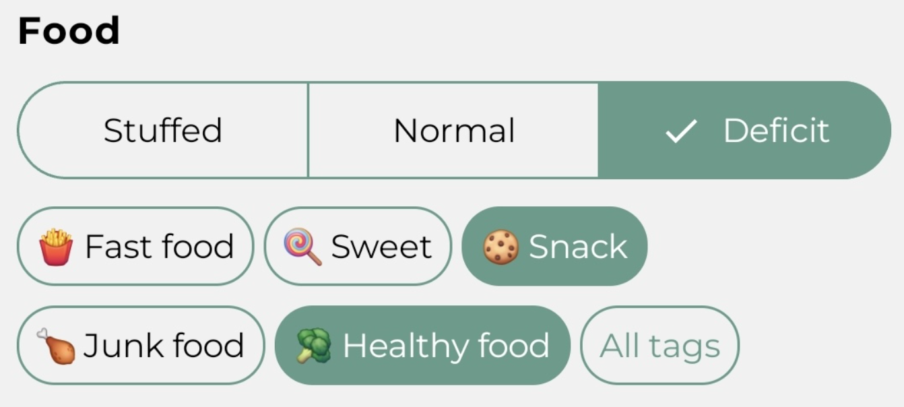
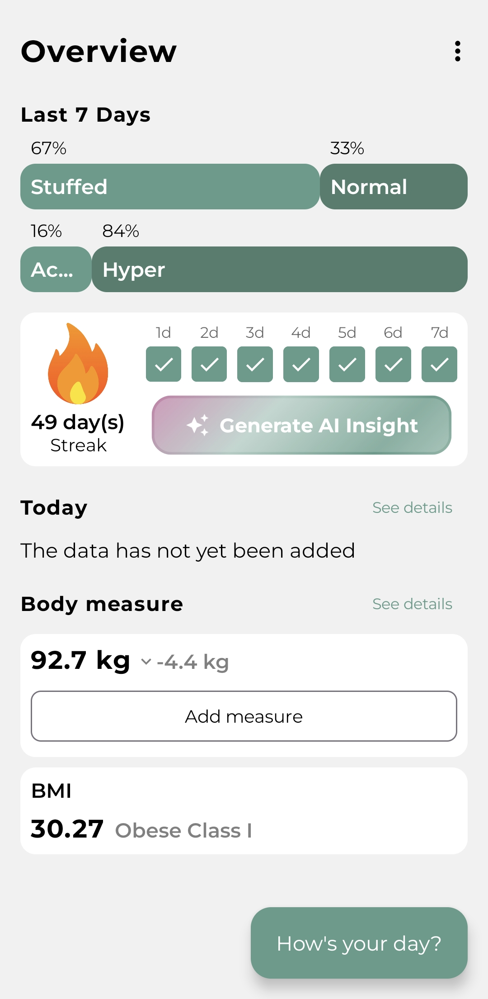
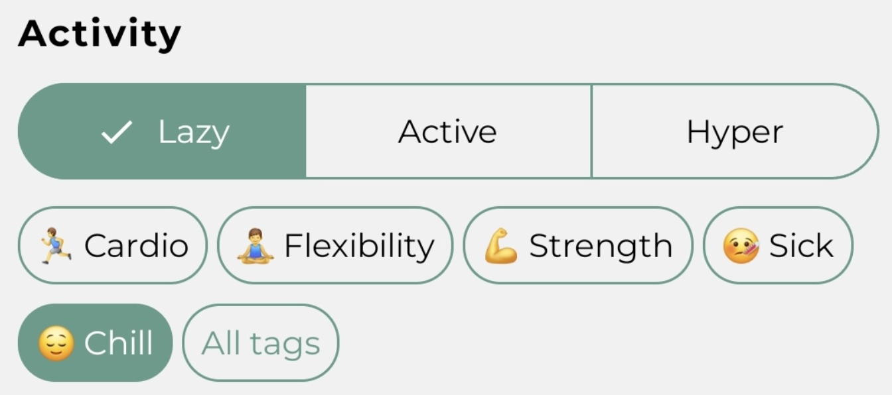
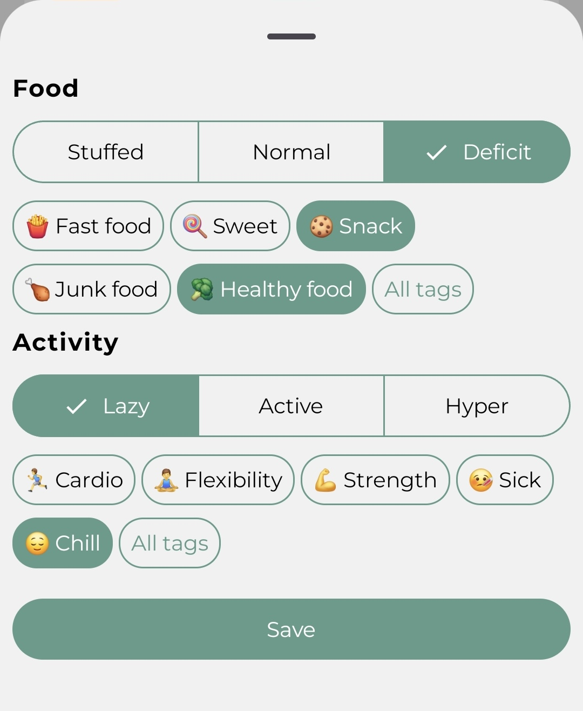
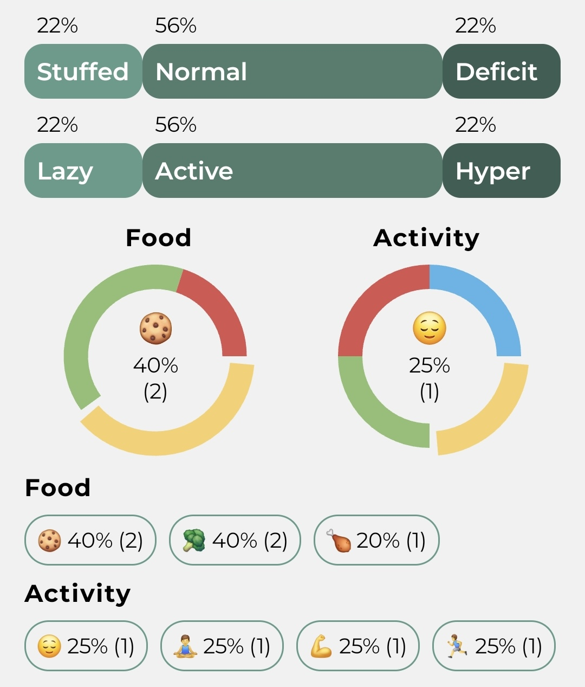
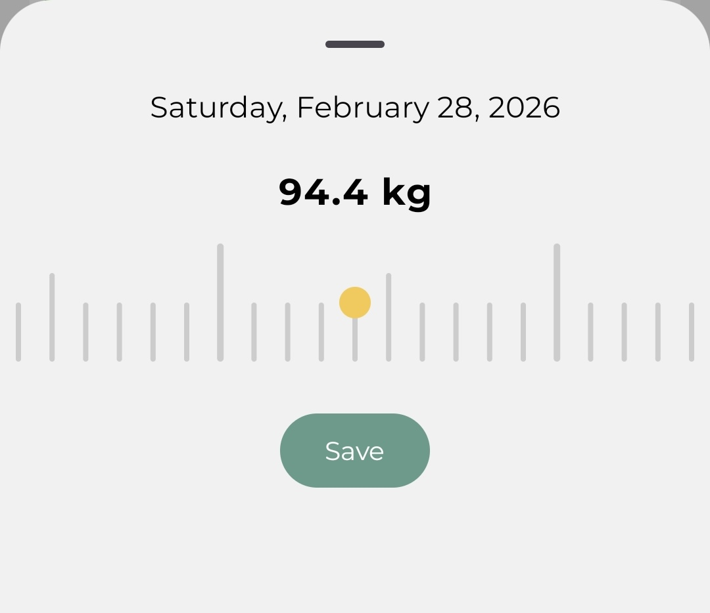

Mark how you ate
Pick one of three states: Stuffed, Normal, or Deficit. That's it. Optionally add tags — Fast food, Sweet, Healthy food, whatever you actually ate — for more context later.

ActiveTrend replaces calorie counting with a simple end-of-day check-in. Two taps. Honest trends. No obsessing.

I quit every calorie tracker after two weeks.
Not willpower. Just burnout from logging every bite.
I've been there too. That's exactly why I built ActiveTrend for myself — and then decided to share it.
— Sergey, creator & 49-day daily user
How it works
Pick one of three states: Stuffed, Normal, or Deficit. That's it. Optionally add tags — Fast food, Sweet, Healthy food, whatever you actually ate — for more context later.

Pick one: Lazy, Active, or Hyper. Again, tags are optional — Cardio, Strength, Flexibility, Sick, Chill — use them when you want to remember why.

Do this for 7 days in a row — fill the streak — and unlock your AI Insight. A short, honest read of your week: what patterns are there, what to watch out for. You choose the tone: warm & supportive, or direct & a little sarcastic.
AI Insight: 5/7 deficit days — solid week. The other two entries share a suspicious overlap with Saturday night and your snack strategy.

Pick your food state - Stuffed, Normal, or Deficit. Pick your activity - Lazy, Active, or Hyper. Add tags if you feel like it. That's your whole log for the day.

Your food and activity trends over 7, 14, 21, or 28 days - in one view. No spreadsheets. No data overload. Just the honest picture of how your weeks actually look.

Log your weight when you feel like it. Watch how it moves alongside your food and activity habits over time. BMI included, no calculator needed.
Log every day for 7 days straight and unlock your AI Insight — a short read on what your week actually looked like and what to watch out for next.
Choose how your AI talks to you. Warm & supportive if you need a nudge. Direct & sarcastic if you need a reality check. Switch anytime in settings.
Your streak and today's status live on your Android home screen. One tap opens the log. No excuses for forgetting.
There are tons of other amazing features waiting for you. Sign up to be the first to download the app and explore them all!

MyFitnessPal. YAZIO. Lose It. Lifesum. I tried them all. Each time I'd last two, maybe three weeks — then quietly stop opening the app. Not because I didn't want to lose weight. Because logging every meal felt like a part-time job I never signed up for.
I'm a senior Android developer living in Buenos Aires. So instead of downloading another tracker, I built one with a single rule: if I skip a day of logging, the app failed — not me. 49 days later, I'm down 9.8 kg. I still open it every evening. That's never happened before.
This app is also a small tribute to Francesca de Lapa — my cat, who reminds me every day to be patient. She's in the app too. 🐱